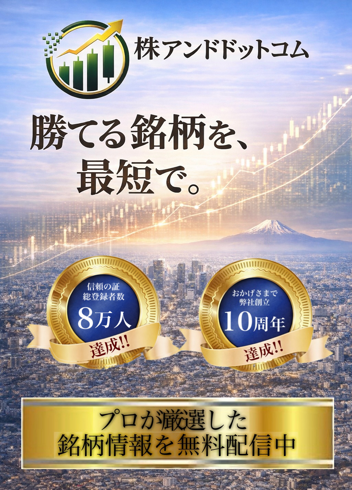
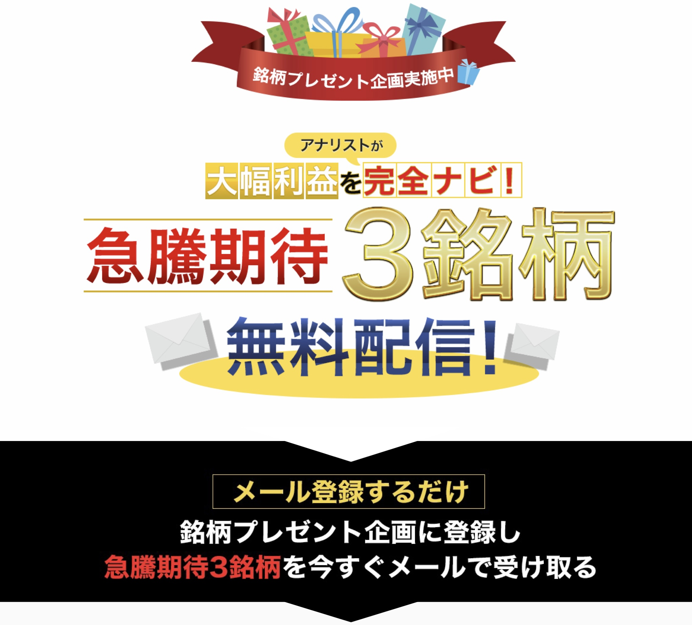
※完全無料・いつでも解除可能
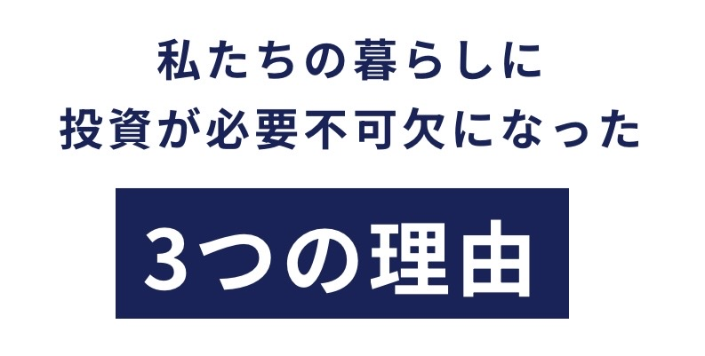
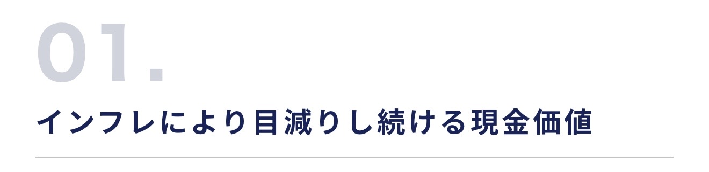
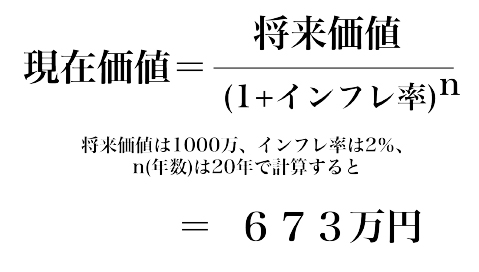
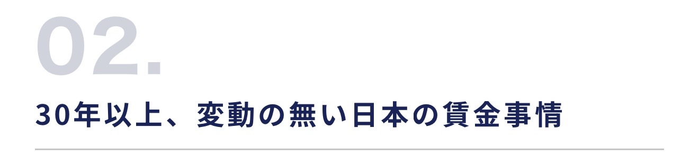
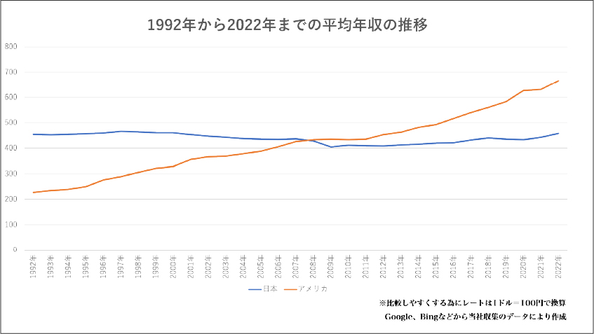
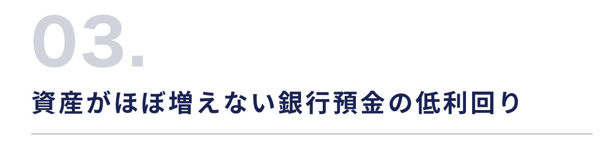
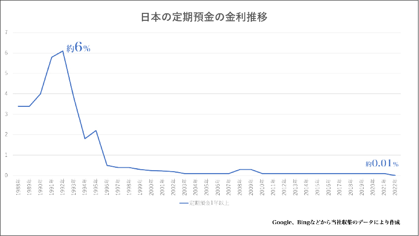
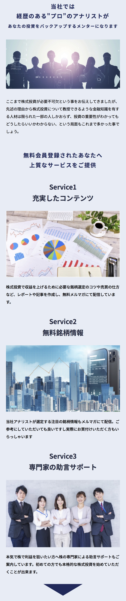
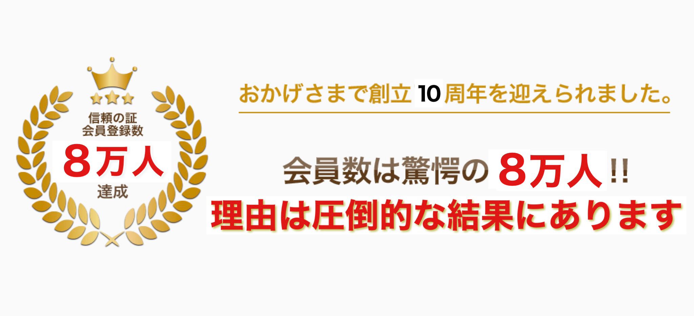
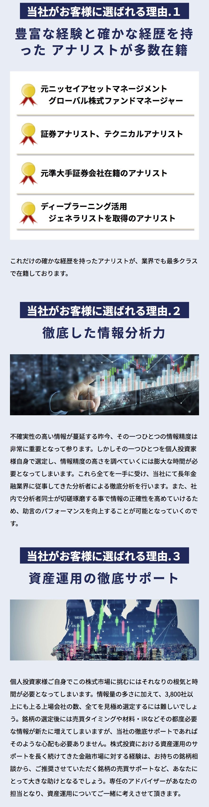
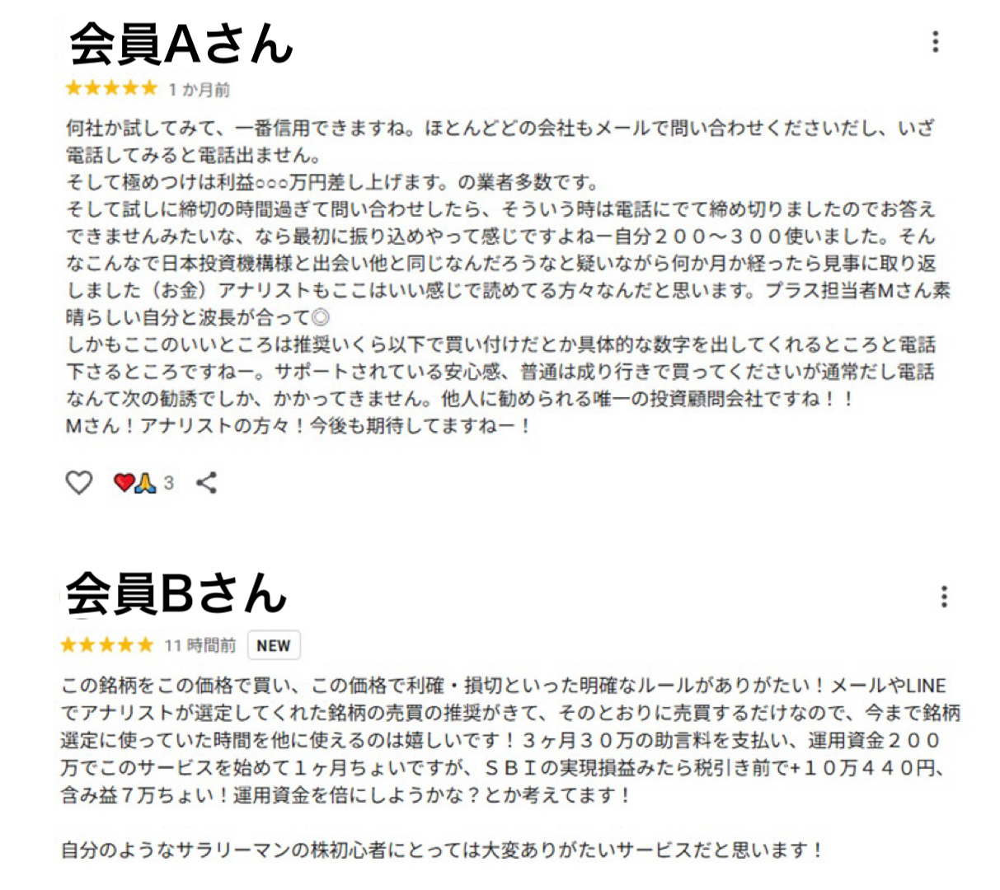
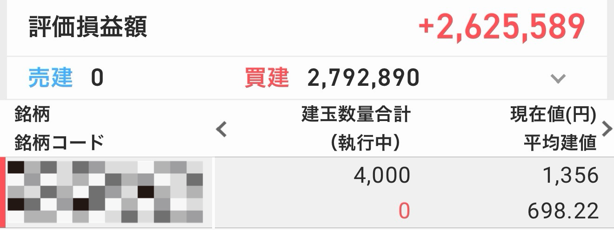
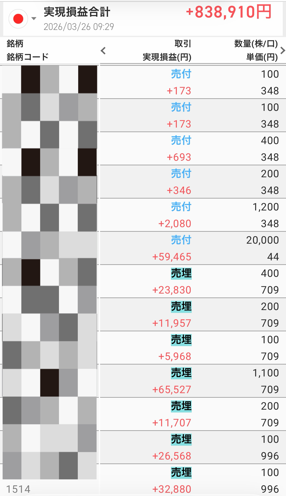
【投資に係るリスクおよび手数料について】
ホームページ上、メール上での提供情報はあくまでも情報の提供であり、売買指示ではございません。実際の投資商品の売買におきましては、自己資金枠等を考慮した上、ご自身の判断・責任のもとご活用をお願い致します。国内上場有価証券等には株式相場、金利水準、為替相場、不動産相場、商品相場等の価格の変動等および有価証券の発行者等の信用状況（財務・経営状況を含む）の悪化等それらに関する外部評価の変化等を直接の原因として損失が生ずるおそれ（元本欠損リスク）、または元本を超過する損失を生ずるおそれ（元本超過損リスク）があります。
【株式投資の勉強会(セミナー)を不定期開催！】
弊社では不定期に少人数制にて株式投資を学ぶ勉強会(セミナー)を開催しております。ご興味があれば是非ご参加ください。尚、少人数につき毎回、即時定員に達してしまいますので参加ご希望の際はお早目にご連絡ください。（※会場の関係上、増員の追加募集などはございません。）開催については会員様にメールにてお知らせ致します。
【免責事項】
ホームページ及びメール上での提供情報は著作権法によって保護されており、日本投資機構株式会社（以下「当社」）に無断で転用、複製又は販売等を行う事を固く禁じます。提供情報は、当社の情報提供を目的とするものであり、投資勧誘を目的とするものではありません。ホームページ及びメール上での提供情報はあくまでも情報の提供であり、売買指示ではございません。実際の取引（投資）商品の売買におきましては、自己資金枠等を十分考慮した上、ご自身の判断・責任のもとご利用下さい。弊社は、提供情報の内容については万全を期しておりますが、会員様が提供情報の内容に基づいて行われる取引、その他の行為、及びその結果について、これを保証するものではありません。また、この情報に基づいて被った如何なる損害についても当社は一切の責任を負いかねますので予めご了承下さい。